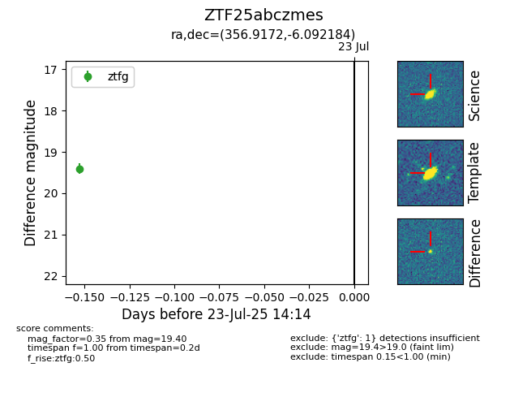

Target ZTF25abczmes at 2025-07-23 14:14, see:
FINK: fink-portal.org/ZTF25abczmes
Lasair: lasair-ztf.lsst.ac.uk/objects/ZTF25abczmes
ALeRCE: alerce.online/object/ZTF25abczmes
alt names
ZTF25abczmes (ztf,fink)
coordinates:
equatorial (ra, dec) = (356.9172,-6.09218)
galactic (l, b) = (84.2819,-64.06855)
photometry
last ztfg=19.40
1 ztfg detections
